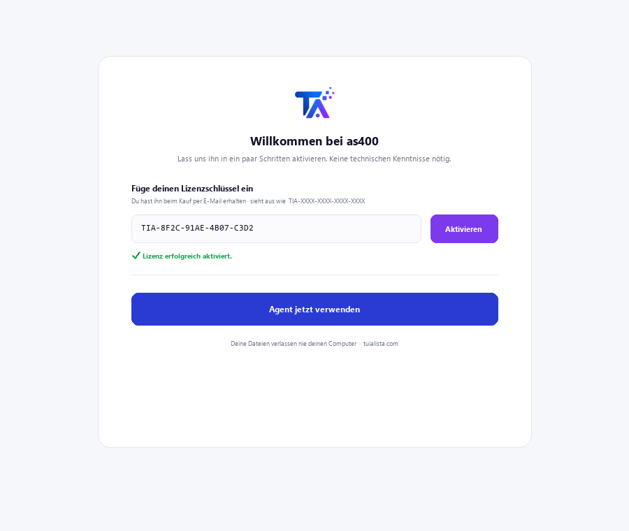
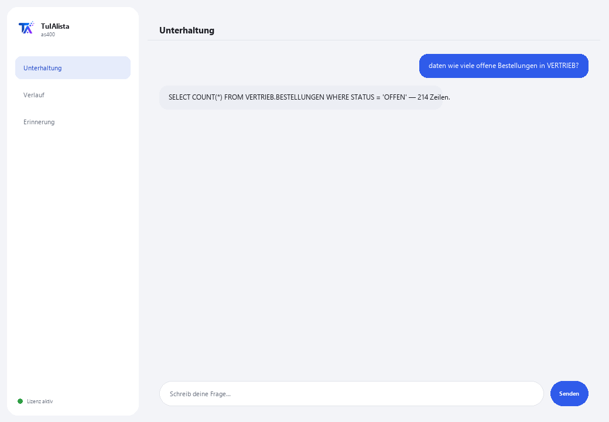

AS/400-Agent (IBM i) · Premium
Fragt Ihre DB2 for i in natürlicher Sprache ab und versteht geerbten RPG/COBOL-Code — ohne SQL oder das System zu kennen.
Was löst er und was brauchen Sie?
IBM i-Kompetenzen sind weltweit knapp. Dieser Agent ist die Brücke zwischen Ihrem geerbten AS/400-System und natürlicher Sprache: Sie stellen Fragen in Ihrer Sprache und erhalten echte Daten aus DB2 for i zurück, oder Sie geben ihm eine RPG/COBOL-Quelldatei und er erklärt sie Ihnen ohne Fachjargon.
- Sie brauchen: Ihren Lizenzschlüssel (TIA-XXXX-XXXX-XXXX-XXXX) und Zugang zur IBM i (Host, Benutzer und Passwort mit installiertem IBM i Access ODBC Driver). Für ein technisches Profil gedacht (IT / IBM i-Administration).
- Erstes Ergebnis: Sie installieren, aktivieren Ihre Lizenz und führen nach der Konfiguration der Verbindung daten <Ihre Frage> aus.
- Ihre IBM i, ihre Daten und Ihr Code verlassen nie Ihr Netzwerk — die Verbindung und Abfragen erfolgen lokal.
soporte@tuialista.com oder besuche tuialista.com/soporte — wir antworten normalerweise am selben Werktag.1 Was dieser Agent tut
Er löst zwei teure Probleme, die aufgrund des weltweiten Mangels an IBM i-Kompetenzen schwer zu bewältigen sind:
- Datenabfrage in DB2 for i ohne SQL- oder Systemkenntnisse. Sie stellen Fragen in normaler Sprache, und der Agent generiert eine SELECT-Abfrage in DB2 for i (schreibgeschützt), führt sie aus und zeigt Ihnen das Ergebnis.
- Geerbten RPG- und COBOL-Code verstehen. Sie geben ihm eine RPG/COBOL-Quelldatei und er erklärt sie Ihnen in klarer Sprache: was sie tut, welche Daten sie verarbeitet und was sie produziert, ohne anzunehmen, dass Sie die Sprache kennen.
Alles geschieht lokal, innerhalb Ihres Netzwerks: die Verbindung zur IBM i und die Daten verlassen nie Ihre Infrastruktur.
2 Installation
Für Windows. Dieser Agent hat einen zusätzlichen Schritt gegenüber den anderen: die Verbindung zur IBM i wird separat konfiguriert, nicht über das Aktivierungsfenster.
Laden Sie das Installationsprogramm von tuialista.com/descargar herunter (AS/400-Agent) und öffnen Sie es. Es erstellt eine Verknüpfung mit dem Logo auf Ihrem Desktop — kein Python oder Terminal erforderlich.
Doppelklicken Sie auf das neue Symbol. Fügen Sie Ihren Lizenzschlüssel ein (er wurde Ihnen beim Kauf per E-Mail zugesandt) und klicken Sie auf Aktivieren. Im Gegensatz zu anderen Agenten fragt er nicht nach einem Ordner — dieser Agent verbindet sich mit einer Datenbank, nicht mit lokalen Dateien.
Installieren Sie den IBM i Access ODBC Driver (von IBM i Access Client Solutions) auf dem Gerät, auf dem der Agent läuft, und definieren Sie die Umgebungsvariablen AS400_HOST, AS400_USER und AS400_PASSWORD mit den Daten Ihres Systems. Dieser Schritt wird normalerweise von der IT-Abteilung durchgeführt.

3 So verwenden Sie ihn
Der Agent öffnet ein Chat-Fenster, wie eine Messaging-App — kein schwarzer Programmierer-Bildschirm. Er hat zwei Befehle plus beenden:

> daten <Frage>Sie schreiben Ihre Frage in natürlicher Sprache. Der Agent generiert eine SELECT-Abfrage in DB2 for i (Syntax BIBLIOTHEK.TABELLE), validiert sie als schreibgeschützt und führt sie aus. Z. B.: daten wie viele offene Bestellungen gibt es in der Bibliothek VERTRIEB? Die Ergebnisse sind auf 100 Zeilen pro Abfrage begrenzt.
> erklären <Datei>Sie geben ihm den Pfad zu einer Datei mit RPG- oder COBOL-Quellcode, und er erklärt Ihnen ihren Zweck, die Daten, die sie verarbeitet, und was sie produziert, ohne unnötigen Fachjargon.
> beendenBeendet die Sitzung (funktioniert auch mit exit).
4 Beispiele für häufige Anwendungen
Eine operative Zählung
daten wie viele Rechnungen wurden gestern ausgestellt?
Eine Summe aus einer physischen Tabelle
daten summiere den Betrag der Bestellungen der Bibliothek VERTRIEB dieses Monats
Ein Programm erklären, das “niemand versteht”
erklären /home/quellen/CALCNOM.cbl — ideal, wenn Sie Tausende von Zeilen RPG/COBOL ohne Dokumentation erben.
Eine Brücke zur Moderne bauen
Verwenden Sie daten, um Zahlen aus der IBM i zu extrahieren und in einen Bericht oder ein Dashboard zu übertragen, ohne das geerbte System externen Tools auszusetzen.
5 Häufig gestellte Fragen
Kann er die Produktionsdaten der IBM i ändern oder beschädigen?
Brauche ich den IBM-Treiber unbedingt?
Verlassen die Daten der IBM i mein Netzwerk?
Welche Codesprachen kann er erklären?
Generiert er Standard-SQL oder DB2 for i-SQL?
Wie viele Zeilen gibt eine Abfrage zurück?
In welcher Sprache antwortet er?
Warum ist er “Premium”?
Kann ich mehrere Bibliotheken ansprechen?
Ist das generierte SQL immer korrekt?
6 Problemlösung
“pyodbc und der Treiber 'IBM i Access ODBC Driver' fehlen”
Verbindet sich nicht mit der IBM i
“Nur Leseabfragen (SELECT) sind erlaubt”
Zeigt “Lizenz ungültig” oder fordert erneute Verbindung
“Keine KI-Anbieter konfiguriert”
Keine dieser Lösungen hat Ihr Problem behoben? Schreiben Sie uns direkt — wir schauen es uns gerne gemeinsam mit Ihnen an.
soporte@tuialista.com oder besuche tuialista.com/soporte — wir antworten normalerweise am selben Werktag.7 Datenschutz und Vertraulichkeit
Ihre IBM i, ihre Daten und Ihr Code verlassen nie Ihr Netzwerk.
- Der Agent verbindet sich lokal mit der IBM i (innerhalb Ihres Netzwerks) und führt die Abfragen dort aus. Die Ergebnisse werden auf keinen Server hochgeladen.
- Nur das Schema (Namen von Tabellen/Spalten) und Ihre Frage werden an die KI gesendet, um die SELECT-Abfrage zu verfassen, oder die RPG/COBOL-Quelldatei, die Sie zu erklären bitten. Die von einer Abfrage zurückgegebenen Daten werden nicht an die KI-Engine übertragen.
- Das Einzige, was über das Internet läuft, ist: (1) eine Überprüfung, dass Ihre Lizenz aktiv ist, und (2) der notwendige Kontext (Schema + Frage, oder der zu erklärende Code), um die Antwort zu generieren.